4. Funktioner
Diskutera parvis vad följande begrepp har och göra med funktioner
- Linje
- Parabel
- Riktingskoefficient
- Funktionsvärde
- Nollställe
- Växande funktion
- Avtagande funktion
Uppgifter
Svara utgående från grafen nedan på följande frågor.
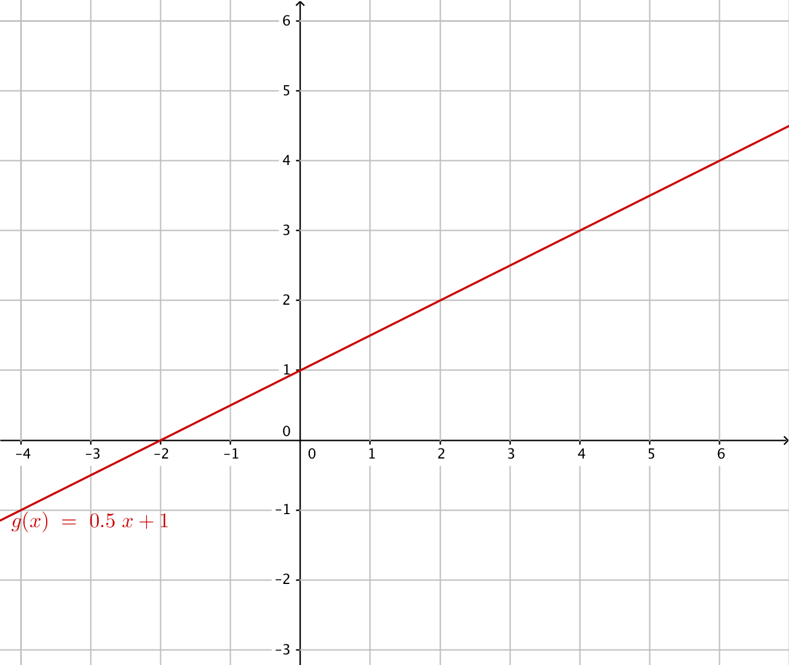
Bestäm
- funktionsvärdet i punkten \(x=2\).
Vi går till \( x = 2 \). Sedan tittar vi uppåt och nedåt och söker funktionen. Från funktionen går vi mot \(y\)-axeln. Funktionsvärde är 2.
- Funktionsvärdet i punkten 4 är 3.
Funktionsvärdet i punkten 4 är 3.
- nollstället för funktionen.
Vi söker de punkter som funktionen skär \(x\)-axeln, i dessa punkter har funktionen värdet noll. Nollstället är i punkten (-2,0).
- funktionsvärdet i punkten \(x=2\).
- Svara utgående från grafen nedan på följande frågor.
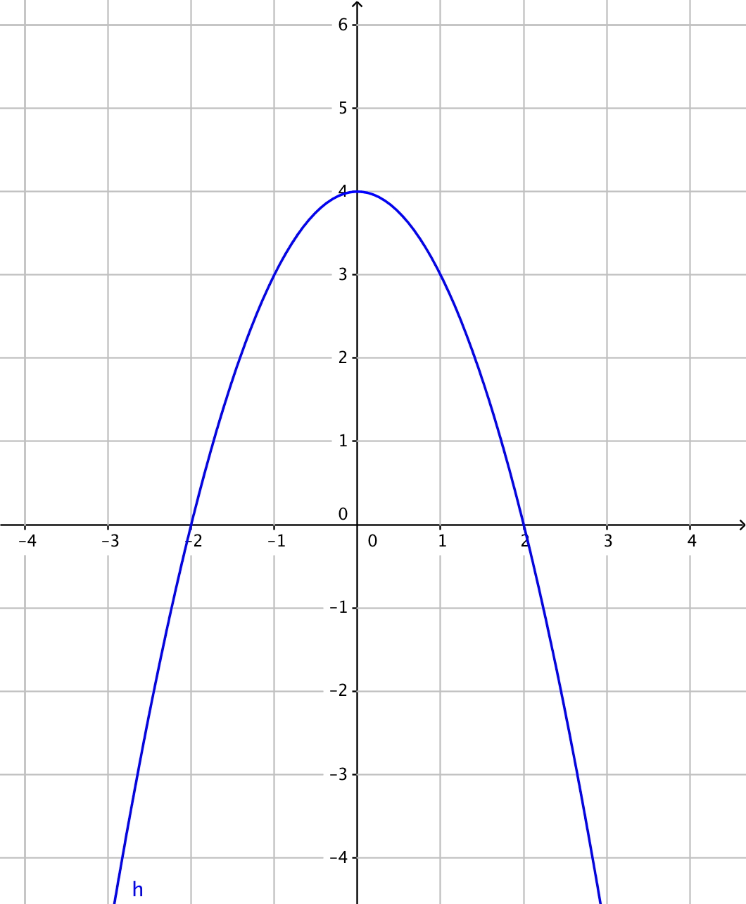
Bestäm
- \(h(1)\)
\(h(1)=3\)
- \(h(x)=4\)
Vi söker de punkter som ger funktionsvärdet 4. Alltså då \(x=0\).
- nollställena
Nollställena är i \(x=-2\) och i \(x=2\).
- när funktionen är avtagande.
Då \(x\geq 0\).
- \(h(1)\)
Välj rätt alternativ för funktionerna. Välj vid behov flera alternativ per påstående.
Påstående Riktingskoefficenten har värdet -2. Riktingskoefficenten har värdet -1. Riktingskoefficenten har värdet 1. Riktingskoefficenten har värdet 2. Nollstället är \(x=0\). Nollstället är \(x=1\). 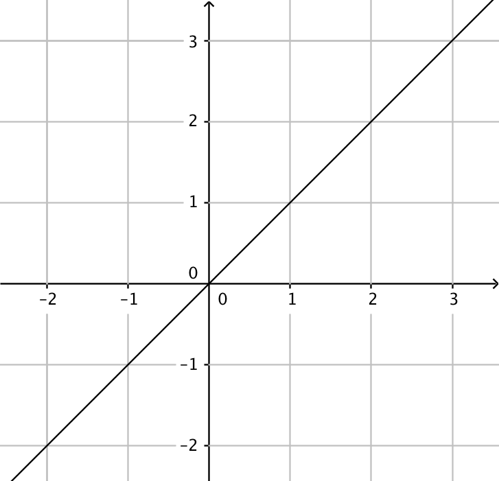 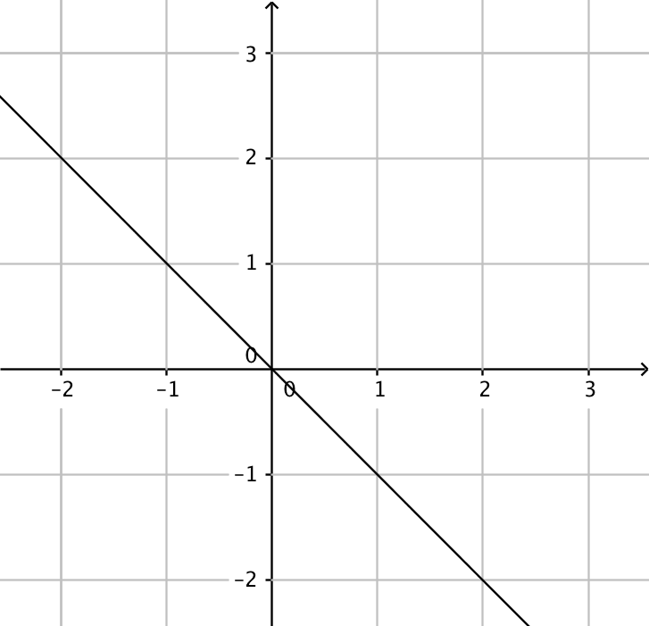 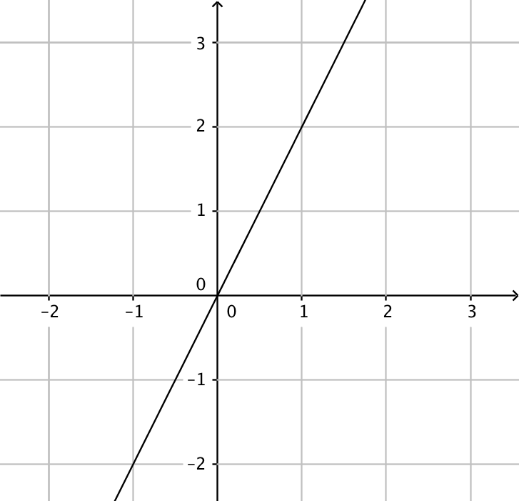 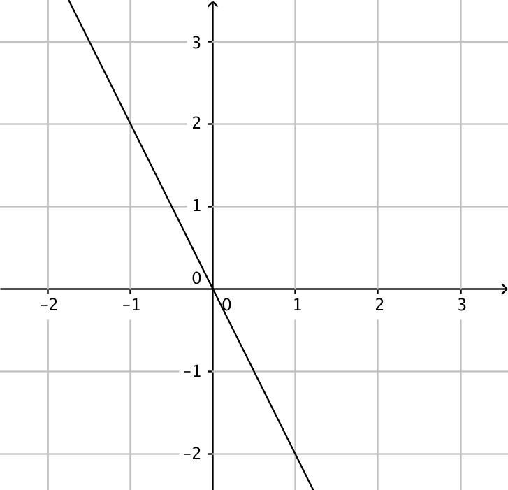 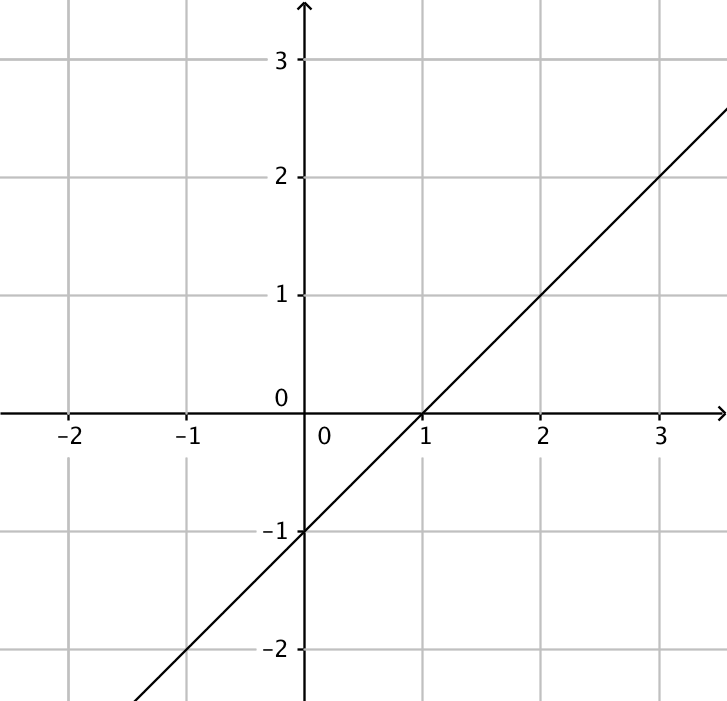 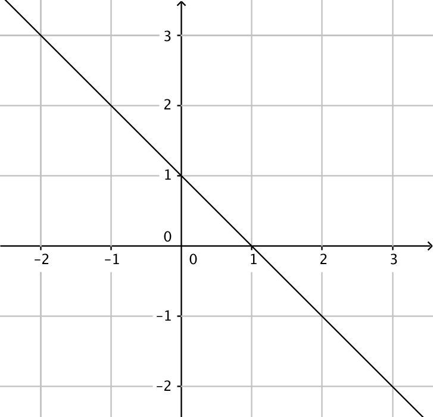 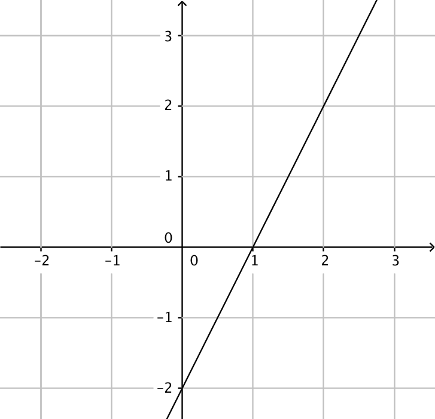 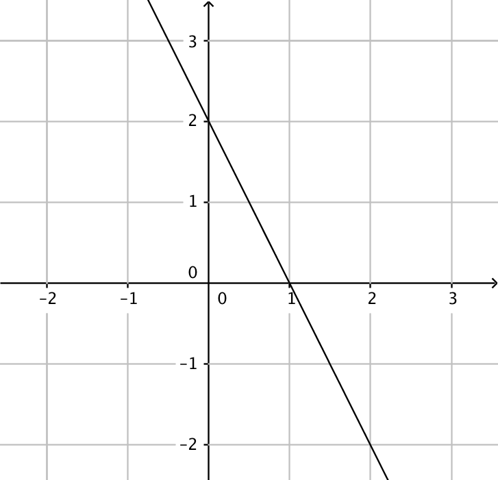 Påstående Riktingskoefficenten har värdet -2. Riktingskoefficenten har värdet -1. Riktingskoefficenten har värdet 1. Riktingskoefficenten har värdet 2. Nollstället är \(x=0\). Nollstället är \(x=1\). Använd dig av funktionen i bilden och svara på följande frågor.
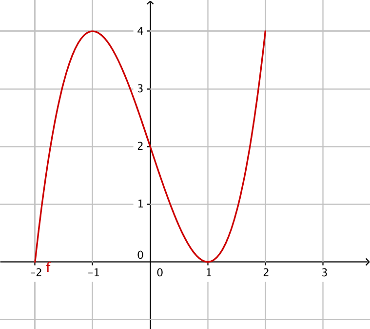
Bestäm när funktionen är
- växande
\(-2 \leq x \leq -1\) och \(1 \leq x \leq 2\)
- avtagande
\(-1 \leq x \leq 1\)[/showhide]
- konstant?
Då \(x=-1\) eller \(x=1\). Ur ett matematisk perspektiv kan vi kalla den konstant i dessa punkter.
- växande